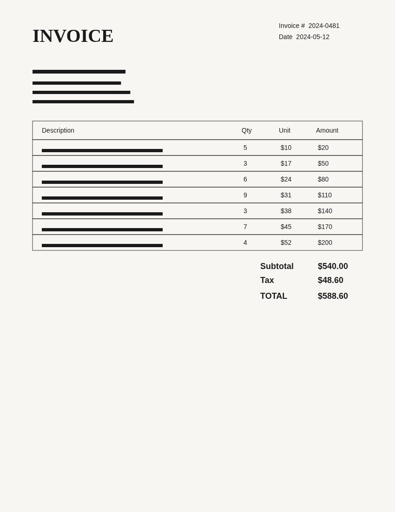
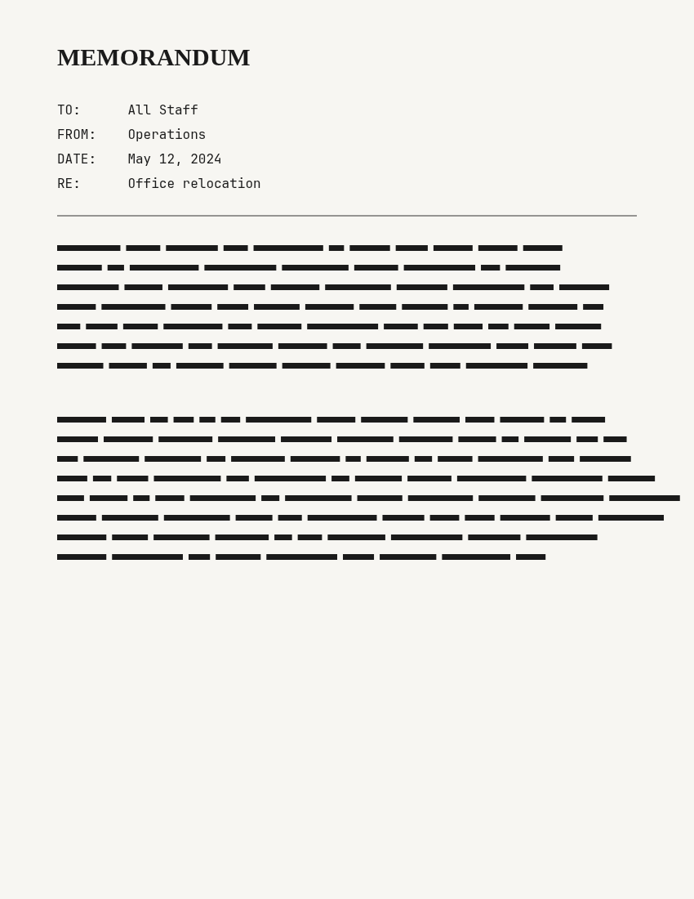
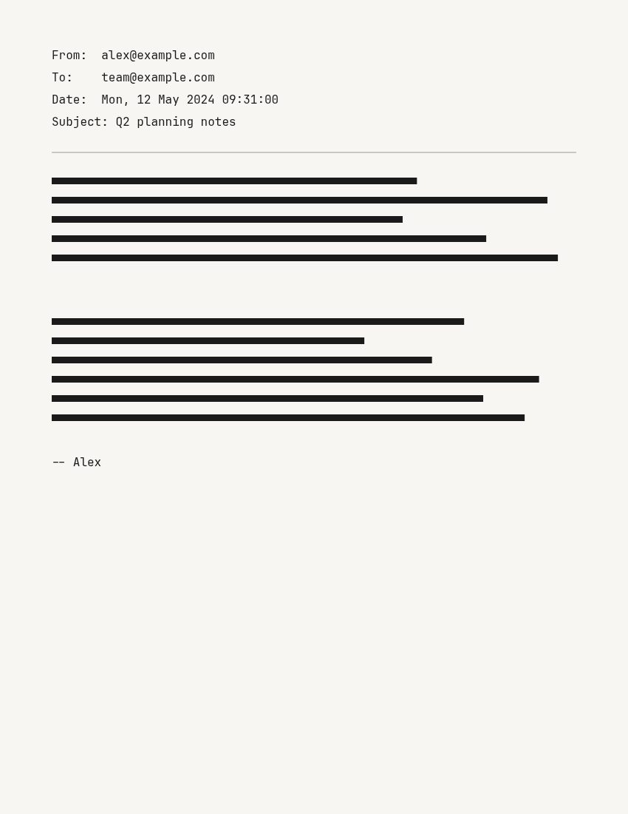
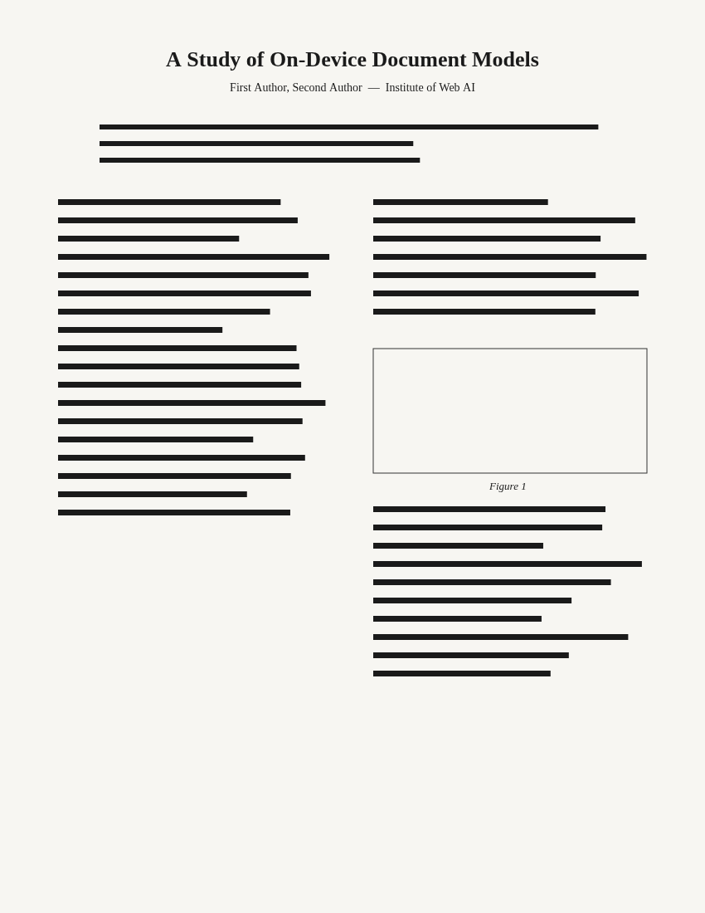

← All models · DiT document classification
use case · multi-model
A classifier is the cheap dispatcher in front of expensive extraction. Here DiT
names the document type (it reads layout, so it's fast and robust), and that type decides
which question to ask next — an invoice gets "what is the total?", a
memo gets "what is the subject?". Then
Donut, a document-VQA model,
reads the same page and answers. Two models, one drop, all on your device.
Stage 1 — document classifier (DiT, ~88 MB)
Stage 2 — document-VQA reader (Donut, ~215 MB)




1 · Document type (DiT)
2 · Answer (Donut)
Why chain them? Running a heavy VQA model on every page and every possible question is wasteful. The classifier triages first, so you only ask the questions that make sense for the type in front of you — the pattern behind real document-understanding pipelines.